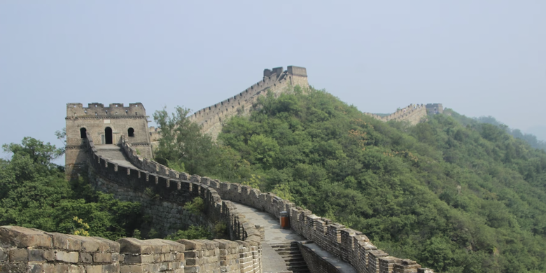
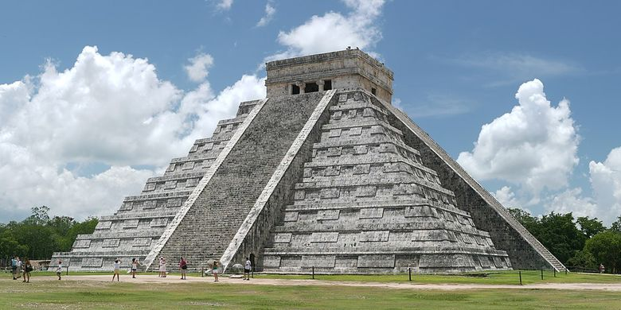
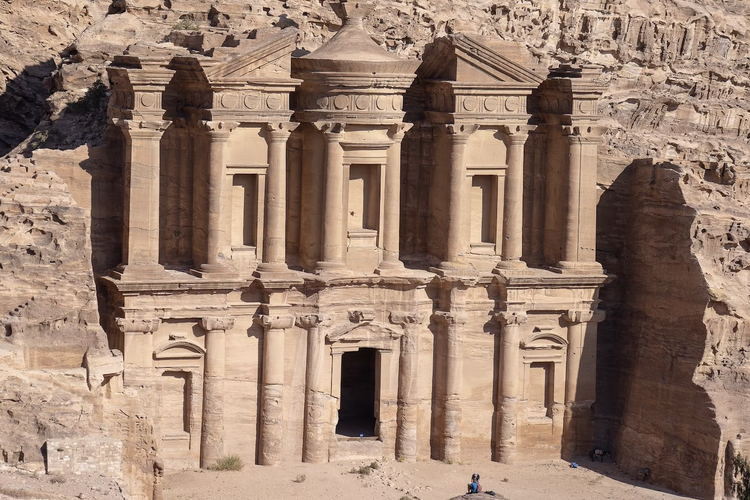
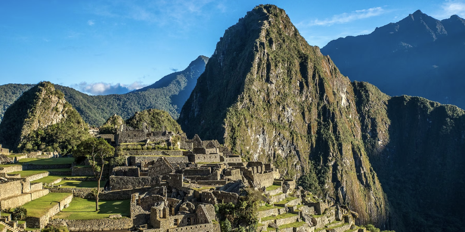
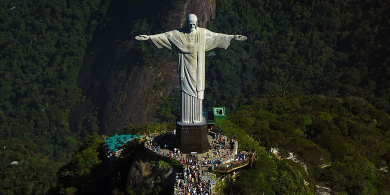
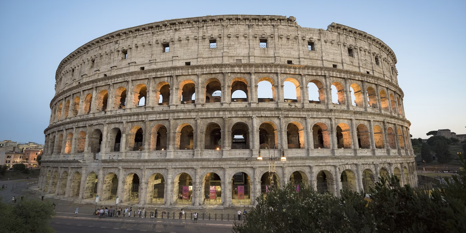
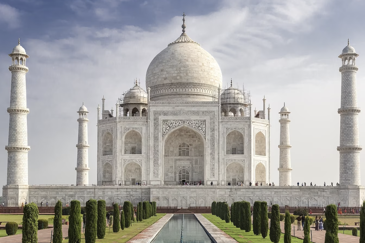

Home
Kampanye yang dimulai pada tahun 2000 oleh sebuah yayasan Swiss tersebut bertujuan untuk melakukan pembaruan, mengingat bahwa 7 keajaiban dunia kuno asli yang disusun pada abad ke-2 SM, hanya tersisa satu yang masih berdiri, Piramida Giza. Voting penentuan 7 keajaiban dunia baru tersebut diikuti lebih dari 100 juta suara, dan hasil akhirnya diumumkan pada tahun 2007 silam. Dikutip dari laman New 7 Wonders, berikut adalah daftar 7 keajaiban dunia baru:
- Tembok Besar, China
- Patung Christ the Redeemer, Brazil
- Machu Picchu, Peru
- Taj Mahal, India
- Petra, Yordania
- Colosseum Roma, Italia
- Chichen Itza, Meksiko
Tentang 7 Keajaiban Dunia
1.Tembok Besar, China
Tembok Besar China menjadi salah satu konstruksi bangunan terbesar di dunia, yang diperkirakan memiliki panjang sekitar 8.850 km. Meski dalam sebuah studi mengklaim panjangnya mencapai 21.200 km. Namun, studi ini masih diperdebatkan. Pembangunan Tembok Besar China dimulai pada abad ke-7 SM dan berlanjut selama 2.000 tahun, dengan tujuan untuk mencegah invasi dan serangan. Meski sejumlah pengamat mencatat bahwa, tembok besar itu lebih berfungsi sebagai propaganda politik.

2.Chichén Itzá
Chichén Itzá adalah kota Maya yang berkembang pada abad ke-9 dan ke-10 Masehi di semenanjung Yucatán di Meksiko. Di bawah suku Maya Itzá, ada sejumlah monumen dan kuil dibangun yang sangat dipengaruhi oleh Toltec (peradaban Meksiko kuno). Di antara yang paling terkenal adalah piramida El Castillo dengan tinggi sekitar 24 meter di atas Alun-Alun Utama. Sebagai bukti kemampuan astronomi suku Maya, struktur ini menampilkan total 365 anak tangga, jumlah hari dalam satu tahun matahari.

3.Petra
Satu dari 7 keajaiban dunia selanjutnya adalah kota kuno Petra di Yordania. Lokasinya berada di lembah terpencil antara pegunungan dan tebing batu pasir. Bangunan itu konon menjadi salah satu tempat di mana Musa memukul batu yang mengakibatkan air menyembur keluar. Pada puncaknya, kota Petra diketahui memiliki populasi 30.000 jiwa. Namun, gempa bumi besar pada tahun 363 dan 551 Masehi, Petra secara bertahap ditinggalkan.

4.Machu Picchu
Situs Inca dekat Cuzco, Peru ini ditemukan pada tahun 1911 oleh Hiram Bingham. Ia percaya bahwa situs tersebut adalah Vilcabamba. Vilcabamba adalah benteng rahasia Inca yang digunakan selama pemberontakan abad ke-16, melawan pemerintahan Spanyol. Meski klaim tersebut kemudian dibantah. Pendapat lain mengira Machu Picchu adalah situs ziarah, sementara yang lain juga percaya situs itu adalah tempat peristirahatan kerajaan. Apa yang diketahui bahwa, Machu Picchu adalah salah satu dari sedikit reruntuhan besar pra-Columbus yang ditemukan hampir dalam keadaan utuh.

5.Patung Christ the Redeemer
Tujuh keajaiban dunia berikutnya adalah Christ the Redeemer, patung kolosal Yesus yang berdiri di atas Gunung Corcovado, Rio de Janeiro. Asal-usulnya dibangunnya patung ini ketika beberapa orang Brasil takut akan “gelombang ketidakbertuhanan” yang terjadi tepat setelah Perang Dunia I. Mereka mengusulkan sebuah patung, yang pada akhirnya dirancang oleh Heitor da Silva Costa, Carlos Oswald, dan Paul Landowski. Konstruksi dimulai pada tahun 1926 dan selesai lima tahun kemudian. Christ the Redeemer selesai dan berdiri setinggi 30 meter (belum termasuk alas yang tingginya 8 meter).

6.Colosseum
Colosseum di Roma adalah satu dari 7 keajaiban dunia yang dibangun pada abad pertama atas perintah Kaisar Vespasianus. Bangunan Colosseum ini adalah amfiteater berukuran 189 x 156 meter dan memiliki sistem kubah yang rumit, yang mampu menampung 50.000 orang penonton. Pertunjukan yang paling menonjol adalah perkelahian gladiator. Menurut beberapa perkiraan, sekitar 500.000 orang telah tewas di Colosseum.

7.Taj Mahal
Kompleks mausoleum di Agra di India ini, dianggap sebagai salah satu monumen paling ikonik di dunia dan merupakan contoh terbaik dari arsitektur Mughal. Taj Mahal dibangun oleh Kaisar Shah Jahan untuk menghormati istrinya Mumtaz Mahal yang meninggal pada tahun 1631 saat melahirkan anak ke-14 mereka. Bangunan megah yang masuk dalam daftar 7 keajaiban dunia ini terbuat dari marmer putih dengan kubah tengahnya yang megah, dikelilingi oleh empat kubah yang lebih kecil.
